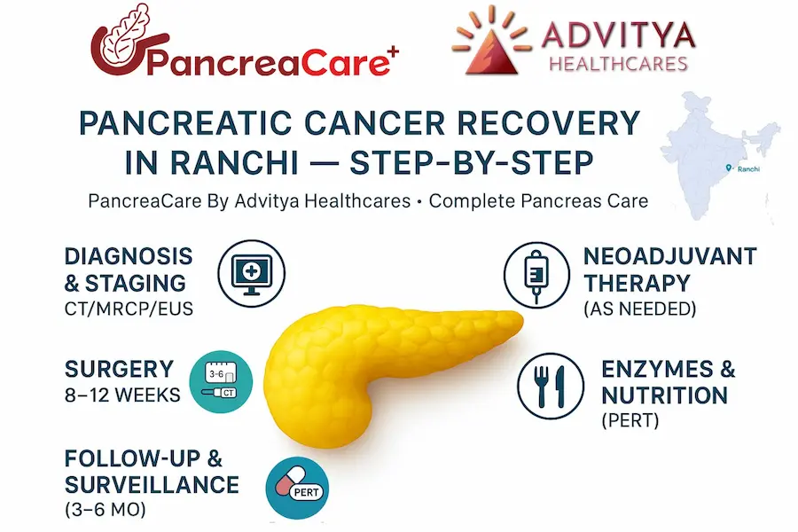
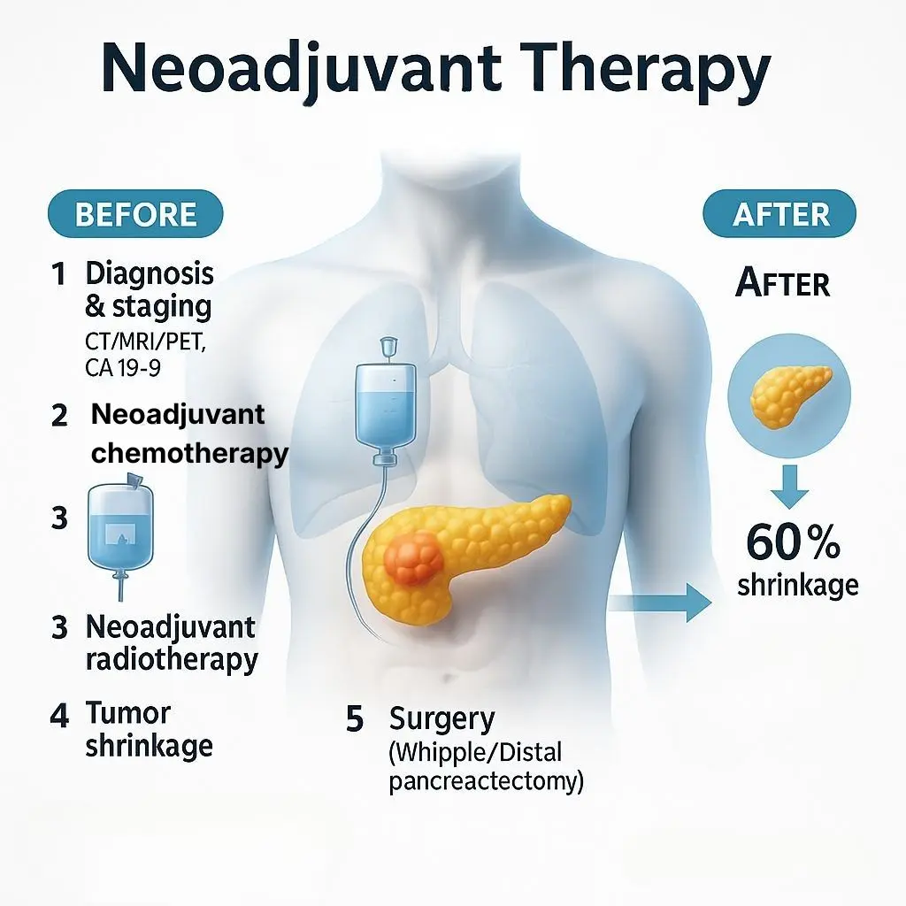
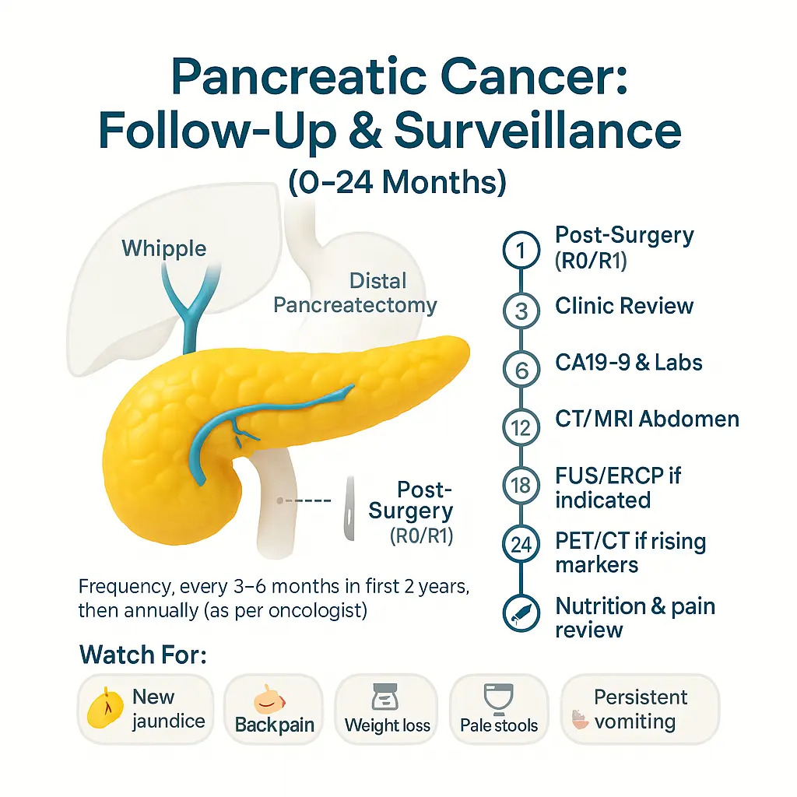
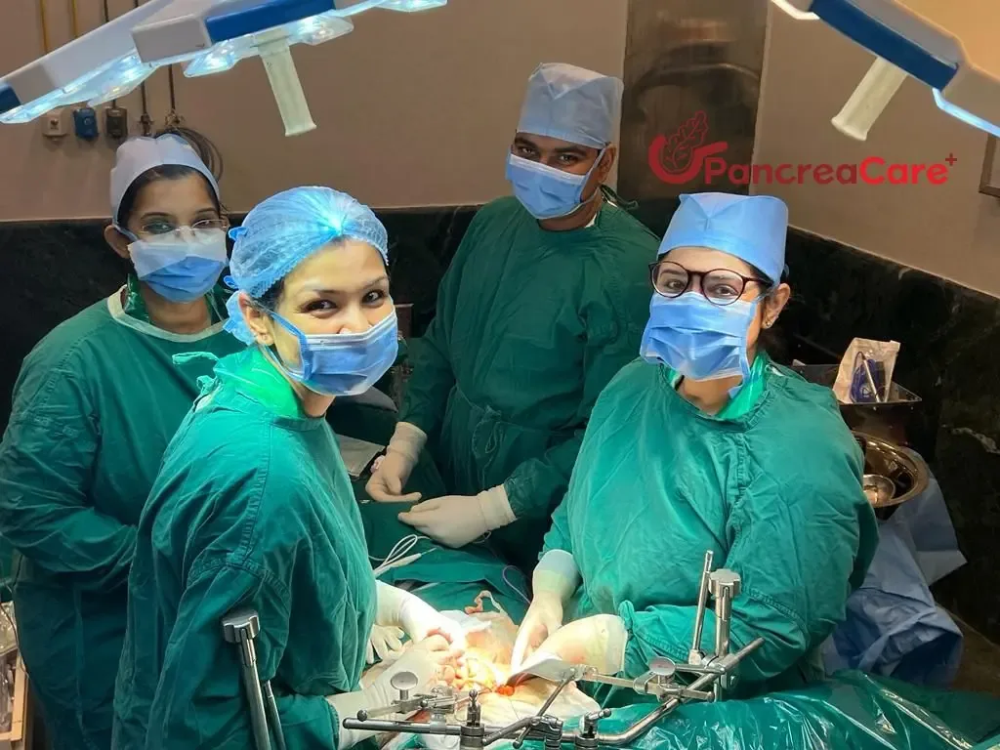

If you or a loved one in Ranchi, Jharkhand, Bokaro is aiming for a full recovery after pancreatic cancer, a clear roadmap makes every decision easier.
By PancreaCare By Advitya Healthcares — complete solutions for all pancreas problems in Ranchi, Jharkhand, Bokaro
1) Staging and first visit in Ranchi, Jharkhand, Bokaro
Recovery starts with accurate staging. At your first visit in Ranchi, Jharkhand, Bokaro, we review prior reports and arrange protocol-driven imaging: contrast CT, MRI/MRCP, and EUS when needed. Blood tests (including CA 19-9) help classify disease as resectable, borderline resectable, locally advanced, or metastatic. A multidisciplinary tumor board (surgery, medical oncology, radiation oncology, radiology, gastroenterology, pathology, dietetics) then decides the safest, most effective plan—surgery first, neoadjuvant therapy, or a clinical trial. Getting this step right avoids delays and unnecessary travel outside Ranchi, Jharkhand, Bokaro.
2) Neoadjuvant therapy—when treatment comes before surgery

If the tumor touches key blood vessels or the biology looks aggressive, chemotherapy (sometimes chemoradiation) before surgery can shrink disease, treat micrometastases early, and test responsiveness. We track progress with scans every 8–12 weeks and trend CA 19-9. Many Ranchi, Jharkhand, Bokaro patients appreciate that this phase can be coordinated close to home, with our team guiding side-effect control, enzyme timing, and nutrition.
3) Curative surgery—your best chance at long-term control
For operable cases, surgery offers the strongest chance of durable remission. The operation depends on location:
- Whipple (pancreaticoduodenectomy) for head/uncinate tumors
- Distal pancreatectomy (often with splenectomy) for body/tail tumors
- Total pancreatectomy in selected situations
What recovery looks like: monitored post-op care, early walking, breathing exercises, and a stepwise return to oral diet. Enhanced-Recovery-After-Surgery (ERAS) pathways—pain control, anti-clot measures, early feeding when safe—help reduce complications and speed discharge. If you live outside central Ranchi, Jharkhand, Bokaro, we coordinate logistics so follow-ups remain smooth.
Nutrition, enzymes, and glucose after surgery
Because surgery changes how bile and enzymes mix with food, some people develop pancreatic exocrine insufficiency (PEI)—oily stools, gas, bloating, and weight loss despite good intake. Pancreatic enzyme replacement therapy (PERT), taken with meals/snacks, restores digestion, improves energy, and supports weight gain. If a large portion of the pancreas is removed, blood sugar can fluctuate; an individualized diabetes plan (monitoring, diet, tablets/insulin) keeps it steady. Our Ranchi, Jharkhand, Bokaro dietitians design small, frequent, protein-rich meals, hydration goals, and vitamin support tailored to your tolerance.
4) Adjuvant therapy—lowering the risk of recurrence
After sufficient healing (commonly 6–8 weeks post-op), most patients are considered for adjuvant chemotherapy to reduce relapse risk. Regimens, duration, and start dates depend on stage, margins, nodes, and overall fitness. If you already received neoadjuvant therapy, your post-op plan is adjusted to complete the optimal total course. Our Ranchi, Jharkhand, Bokaro team focuses on timely starts, proactive side-effect management, and maintaining strength so you can finish treatment as planned.
5) Follow-up & surveillance
A structured follow-up plan is your safety net:

- Every 3–6 months for years 0–2: clinic review, labs, CA 19-9, and CT/MRI as indicated
- Every 6–12 months for years 3–5 (or as advised)
Between visits, call if you notice new jaundice, persistent back/abdominal pain, unexplained weight loss, greasy stools, or new-onset diabetes. We also provide survivorship guidance—vaccines if your spleen was removed, bone/muscle health, return-to-work planning, and mental-health support right here in Ranchi, Jharkhand, Bokaro.
6) Day-to-day recovery: rehab, lifestyle, and support
- Activity: Begin with short walks and breathing exercises; build to light resistance and aerobic sessions as cleared. Movement improves gut motility, sleep, and mood.
- Diet: Protein-forward meals; trial fats carefully; time expandwith food. Consider lactose-free or low-fat options if symptomatic.
- Tracking: Keep a simple diary (stools, weight, appetite, glucose). It helps your clinicians fine-tune enzymes, nutrition, and medicines.
- Emotional health: Fatigue and “scanxiety” are common. Counseling, caregiver involvement, and peer groups in Ranchi, Jharkhand, Bokaro can make a real difference.
Why choose PancreaCare By Advitya Healthcares in Ranchi, Jharkhand, Bokaro
- End-to-end pancreas care in Ranchi, Jharkhand, Bokaro: from first consult to survivorship
- Evidence-based diagnostics: CT/MRI/MRCP/EUS with standardized protocols
- Advanced endoscopy & stenting for jaundice/obstruction
- High-volume pancreatic surgery with ERAS pathways
- Medical & radiation oncology tailored to your case
- Nutrition, pain & diabetes care, and structured follow-up

If you’re in Ranchi, Jharkhand, Bokaro and experiencing persistent upper abdominal/back pain, jaundice, greasy stools, weight loss, or new-onset diabetes, don’t delay—early evaluation changes outcomes.
Call to action (Ranchi, Jharkhand, Bokaro)
Book an in-person or video consult with PancreaCare By Advitya Healthcares in Ranchi, Jharkhand, Bokaro. We’ll map your sequence—diagnostics → treatment → rehab → surveillance—and walk with you through every milestone.
Have a question this article does not answer?
Send us your reports. A specialist reviews them before you travel, so the first visit begins with a plan rather than a repeat test.